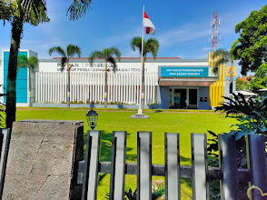

Tanggung jawab pekerjaan meliputi membangun aplikasi web berbasis PHP untuk sistem rekap data end-to-end untuk meningkatkan efisiensi proses rekap manual menjadi sistem digital, merancang UI/UX menggunakan Figma, implementasi Front-End, hingga pengembangan Back-End logic, melakukan integrasi dan pengelolaan database lokal menggunakan MySQL untuk memastikan penyimpanan data yang terstruktur, akurat, dan mudah diakses.

Mengelola lebih dari 80 relasi aktif di wilayah Bandung Barat dengan fokus pada loyalitas pelanggan dan branding produk OTC Bayer. Berhasil mencapai target penjualan dengan rata-rata di atas 105% selama 4 bulan berturut-turut melalui implementasi komunikasi dan strategi penjualan. Mengelola proses pemesanan dan retur produk menggunakan sistem internal perusahaan. Secara konsisten merencanakan, melaksanakan, dan mengevaluasi kunjungan relasi harian untuk memastikan pencapaian target. Selain itu, berhasil mengikutsertakan 20 relasi sesuai target dalam program edisi Ramadan “Bayer House” sebagai bagian dari inisiatif peningkatan engagement.
Melakukan instalasi teknologi 5G, konfigurasi, serta pemeliharaan perangkat jaringan telekomunikasi, termasuk BTS dan sistem transmisi, di wilayah Lombok. Memastikan seluruh perangkat berfungsi optimal sesuai standar operasional. Berkoordinasi secara aktif dengan tim internal serta integrator pusat dalam proses implementasi proyek guna memastikan kelancaran dan ketepatan waktu pengerjaan. Berhasil menyelesaikan 4 site proyek jaringan, mencakup kegiatan rollout, upgrade, dan modernisasi, dengan hasil yang sesuai target dan spesifikasi teknis yang ditetapkan.